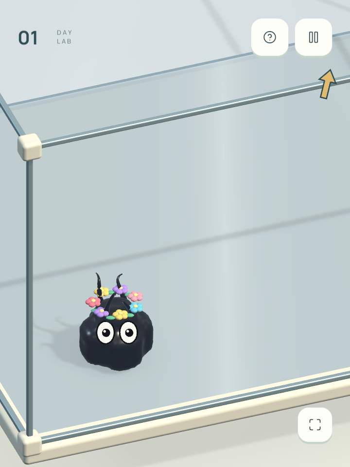
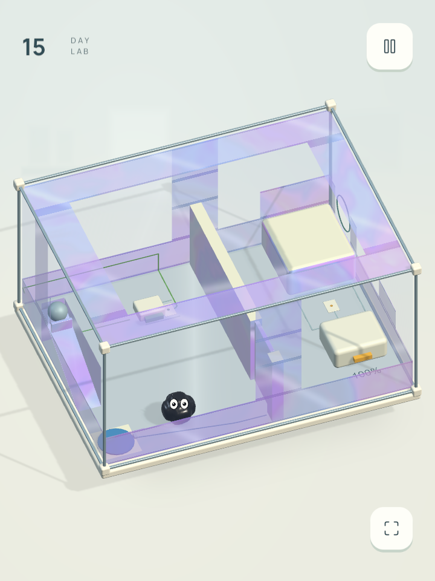
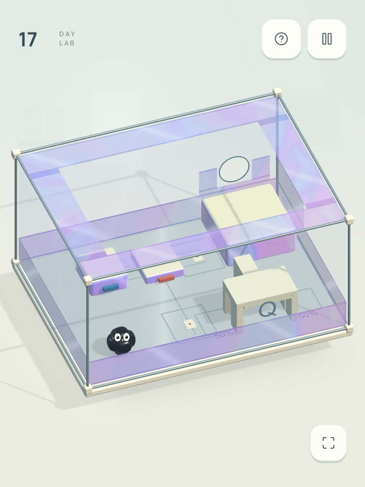
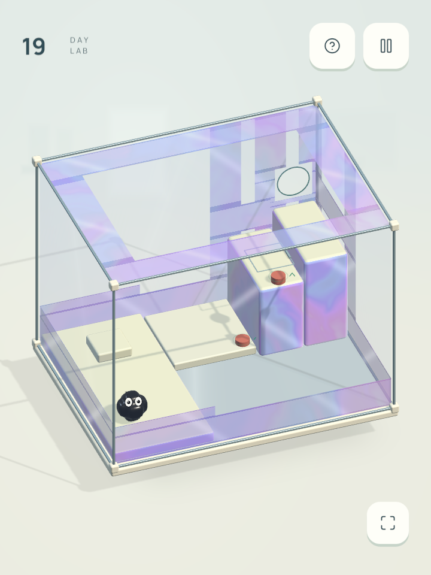
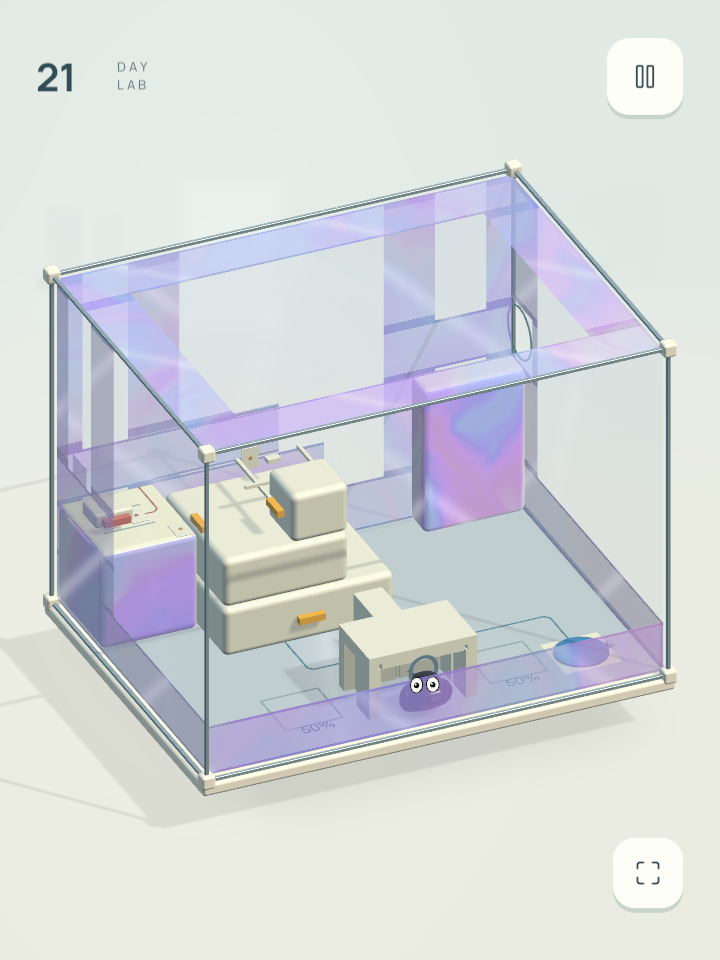
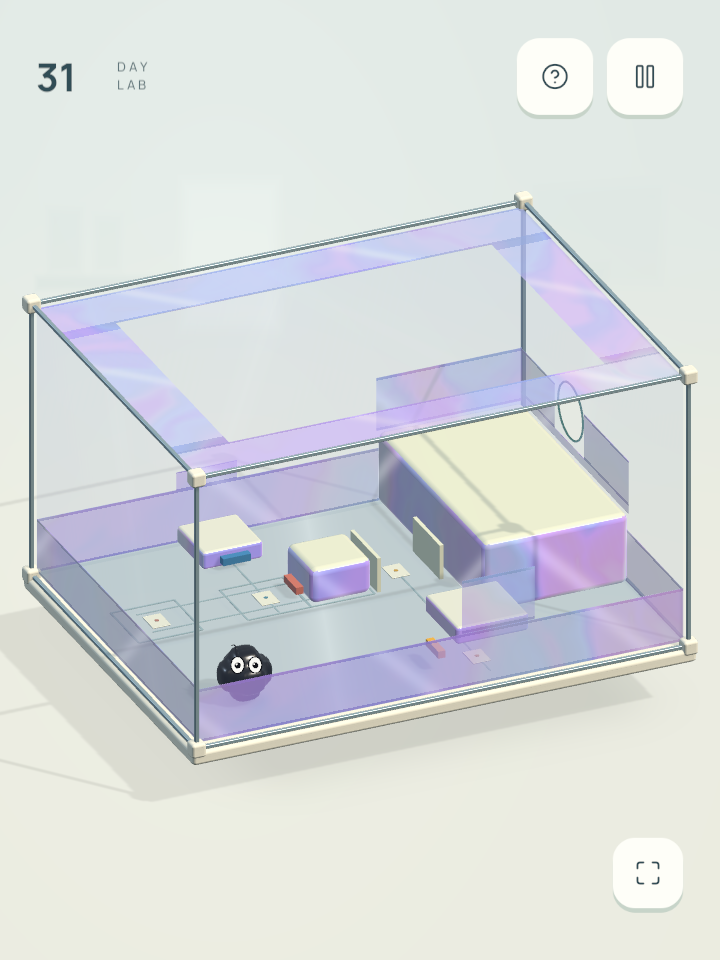
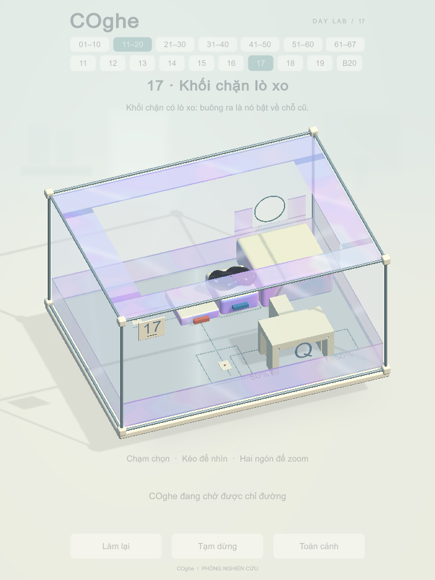
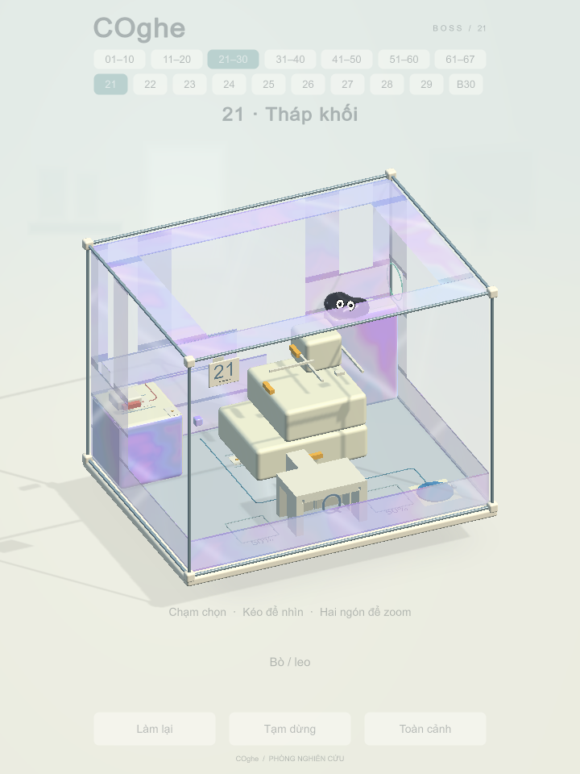
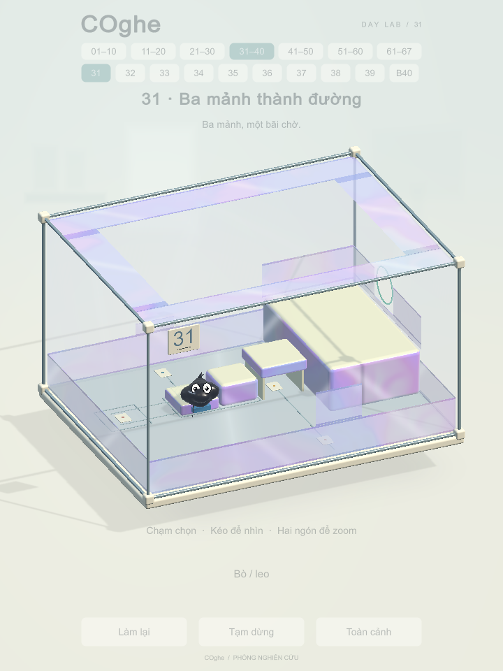

Speedy · nước và ánh sao
Vệt nước mảnh nằm trên mặt đang bò, nhạt dần sau 2,4 giây. Ánh sao nhỏ thỉnh thoảng bay lên từ đường đi.
Ảnh và video bên dưới được chụp từ bản Mac chạy game thật. Giữ vật liệu kính, mạch in và màu cơ quan đã chốt.
Vệt nước mảnh nằm trên mặt đang bò, nhạt dần sau 2,4 giây. Ánh sao nhỏ thỉnh thoảng bay lên từ đường đi.
COghe lấy sách ra, mở và lật trang; mắt nhìn theo sách. Các ký tự toán bay lên nhẹ. Chạm để ra lệnh sẽ ngắt hoạt cảnh.

Cánh tròn màu san hô, tím lilac, vàng kem và xanh trời; lá xanh. Sửa hướng nhận sáng trên những mặt cánh rất nhỏ.

Màn 66 cũ thay vào vị trí 15. Màn 15 cũ rút khỏi thứ tự chơi, vẫn giữ ID để bảo toàn dữ liệu đã mở khóa.

Khối đang di chuyển và khối đã đặt đúng vị trí dùng cùng hình dáng bo góc. Đã rà soát cả 22 màn dùng cơ chế chuyển bề mặt này.

Giữ bảng điều khiển trên thang. Nếu thang rỗng ở trên, đứng gần bến dưới rồi chạm bảng trên thang để gọi xuống.

Tách qua Q → đồng thời đứng A và giữ B để mở chốt → xếp C2, C3 → hợp thể kéo C1 → trèo ra. Bỏ mái chìa gây kẹt khó hiểu; mọi cơ quan còn lại có vai trò rõ.

Mặt A cao 3 cm, B 6 cm, cầu C 9,1 cm và bến ra 12 cm. Tay nắm C vẫn ở tầm bò trên sàn; camera thấy rõ các mặt đứng.


Ảnh trong lượt chơi bằng thao tác chạm: màn 17 và Boss 21 đều đã thoát đủ cơ thể.

Ảnh từ lượt kiểm tra thao tác chạm trên bản Mac; HUD kiểm thử mờ. COghe đã đi hết bốn cao độ và thoát đủ cơ thể.
Bản Mac để chơi thử · Thay đổi, ngân sách hiệu ứng và bằng chứng kiểm thử
Video được ghép từ ảnh chụp định kỳ để xem chuyển động; không dùng chúng để suy ra FPS trên điện thoại.